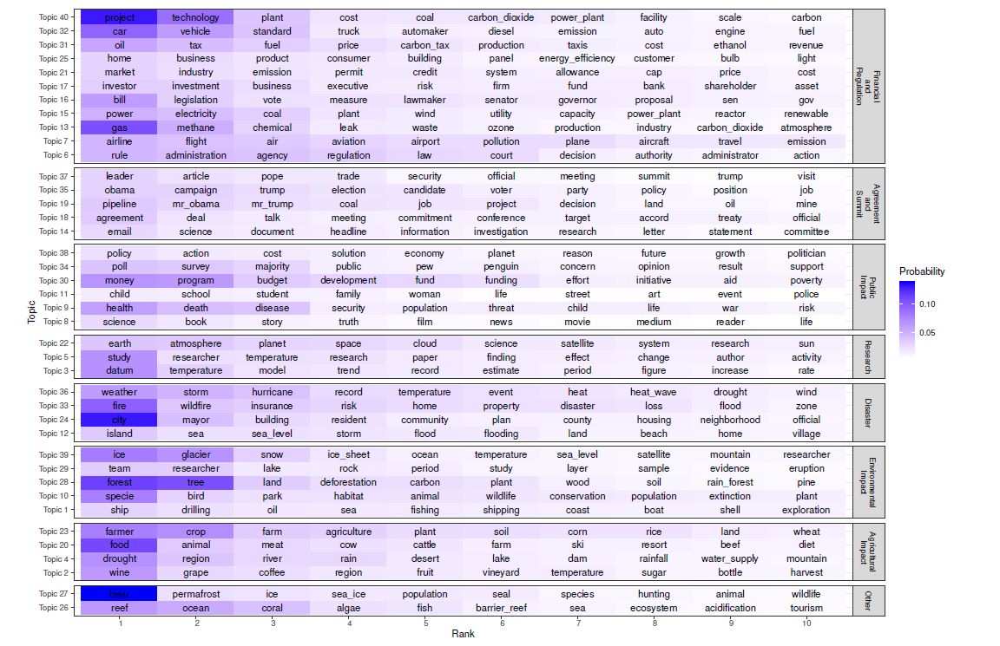

Many consider climate change as one of the biggest challenges of our times. However, there is disagreement on the magnitude of the climate change problem and how to solve it. Conditional on their view on the issue, some people may have a high preference for sustainable solutions and investments tackling the climate change problem, while others may not. Moreover, these preferences can evolve on the arrival of new information. In general, preference for sustainable solutions is largely a function of how concerned people are about climate change.
Discerning concerns about climate change in almost real-time can be useful for many applications, particularly asset pricing. The theoretical model proposed by Pastor et al. (2020) implies that the returns of green stocks vs. the returns of brown stocks is a function of unexpected increases in climate change concerns. In particular, when there is an unexpected increase in climate change concerns, green stocks outperform brown stocks.
However, an issue is that the level of concern about climate change cannot be observed and needs to be proxied. This fact renders the analysis of the dynamics of climate change concerns more complicated than the analysis of observable macroeconomic variables such as GDP growth. Here, we propose an index derived from major U.S newspapers to proxy for unexpected increases in climate change concerns. Our corpus, or set of news articles, about climate change to derive this index can be summarized in multiple topics and theme, for which the most representative words are shown below:

Moreover, we provide an interactive graph to explore the aggregated and topical media climate change concerns indices dynamics. In particular, we report the monthly indices
The full daily dataset is provided here is CSV format:
We will make the corresponding paper available here soon.